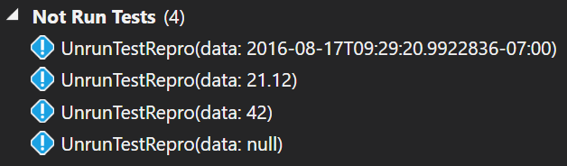

This is what the test discovery looks like inside Visual Studio:

When you click "Run All", this is what Visual Studio shows:

If you look at the Output window, you'll see a curious message that is your hint as to what's going on:
{% highlight text %} ------ Run test started ------ [xUnit.net 00:00:00.1476501] Discovering: VsRunnerNotRunTestRepro (app domain = on [shadow copy], method display = Method) [xUnit.net 00:00:00.2152233] Discovered: VsRunnerNotRunTestRepro (running 4 test cases) [xUnit.net 00:00:00.3744754] Starting: VsRunnerNotRunTestRepro (parallel test collections = on, max threads = 8) [xUnit.net 00:00:00.5224541] Finished: VsRunnerNotRunTestRepro Test adapter sent back a result for an unknown test case. Ignoring result for 'UnrunTestRepro(data: 2016-08-17T09:32:21.7708662-07:00)'. ========== Run test finished: 3 run (0:00:00.56059) ========== {% endhighlight %}Discovery vs. Execution in Visual Studio's test runner
Unit testing systems are generally split into two phases: test discovery and execution. In the case of the Visual Studio test runner (regardless of the underlying test framework), it runs the discovery phase in order to populate the list of tests in Test Explorer, and it runs the execution phase to run the tests the user wants to run.
When the user wants to run just a selected few tests, it instructs the unit testing framework to run those specific tests by saying "Remember these tests you discovered? Please run them.". However, if the user clicks "Run All", then Visual Studio says "I'm not going to give you a list of tests to run; they just want to run them all". The object which tracks each individual test you see in the Visual Studio Test Explorer UI is what's called a "test case".
When we discovered the tests, DateTime.Now returned the current date & time at the
time of discovery. If Visual Studio hands xUnit.net back the test case and says "run this", then
we know what the date & time was that we discovered (it's encoded into the test case), and we run
exactly what it expects. However, when Visual Studio says "just run everything" without giving us
the test cases, we must re-perform the discovery phase before running the tests. The value returned
from DateTime.Now is, of course, different, so the test we're running is not
exactly the same as the test that we gave to Visual Studio earlier. So we run the test
with the new date & time and report that back to Visual Studio. When it attempts to line the test
results up with the test cases it knows about, it doesn't find a match.
What we're experiencing here is "unstable theory data"; that is, the data we retrieve each time we enumerate the tests during discovery is different, and therefore not repeatable. We are running a test very much like the ones we originally discovered, but not identical.
This concept of theory data stability isn't unique to DateTime.Now. Imagine you were
instead performing fuzz testing which returned
seemingly random data every time you enumerated it. Every time you rebuild in Visual Studio, the
list of test values changes, and the "Run All" button becomes effectively useless.
So, what can you do? You have a couple choices.
-
The first choice is to use a different runner. To the best of my knowledge, none of the other runners other than Visual Studio Test Explorer exhibit this behavior. There are many to choose from: TestDriven.Net, NCrunch, CodeRush, Resharper, and many others.
-
If you have your heart set of using Test Explorer, you can give xUnit.net a hint that your data is not stable by telling it not to perform data enumeration during discovery:
{% highlight csharp %} [MemberData(nameof(TestData), DisableDiscoveryEnumeration = true)] {% endhighlight %}Test Explorer will only show a single entry for your test method now, and when you run it, all the results of the individual data elements will be shown when you click on the test in the tree:

This allows you to continue to successfully run and report all the test results, albeit at the expense of being able to run any one individual data row.
Is this a bug in Visual Studio?
In a word: yes.
This is really a design flaw in the way that the Visual Studio Test Explorer behaves, which could easily be fixed without impacting any of the existing unit test framework plugins like xUnit.net.
When Visual Studio performs the test discovery, it receives the complete list of test cases that are available. When a user says "Run All", the behavior of Visual Studio really implies that it believes the unit test framework should run the exact set of tests that were already discovered without actually passing the list of those tests back to the test runner. In truth, discovery is an expensive process, and forcing the unit test frameworks to rediscover tests that Visual Studio already knows about is quite wasteful of your CPU (and your precious time).
We believe there are two potential fixes for this. In our mind, the better choice would be for Visual Studio to use the "run just these tests" API when the user asks to "Run All", passing the list of previously discovered tests back to the test framework. This API already exists, and frameworks already have to implement it, so there should be no realistic downside to make this fix.
Alternatively, if the Visual Studio team is unwilling to do this, then it should consider its pre-knowledge of the discovered tests to be suspect, and if new test results come back for unexpected tests, it should add those tests to the list; similarly, if a known test does not report a result during "Run All", at the end of the run, it should be removed from the list, because it is clearly no longer valid test.